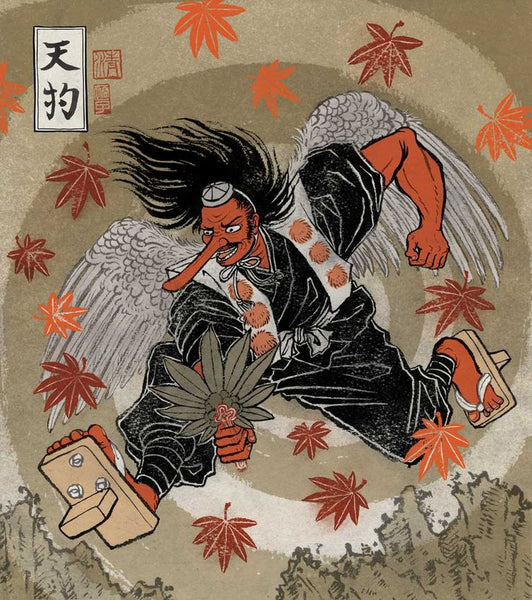

副題：所謂「AI」に就いて
(Let's think about the future)
I sit down in the uppermost seat of the Fujisaki Memorial Hall.
Wish it was the Royal Albert Hall and it was Eric Clapton on stage but it's a tech mogul.
No velvet curtains or soulful pentatonic licks,
just a program to glorify the continuation of this so-called AI revolution we're witnessing.
＊
As of late, I've been depressed, apathetic, and bored out of my skull, disappointed in myself for
succumbing to cheap escapsim; all sorts the modern age has to offer.
＊
Lust especially, crystal clear high definition pornography to stimulate the mind through our
precious eyes, we are all the failed sons of God. Satan has enslaved us all, unconscious
participants of the old Faustian bargain.
＊
Batter my heart, three-person'd God. I've hit rock-bottom, as they say.
How miserable, puny, and embarrassed I felt, in the gaze of the Great judgmental Father.
Christ, my Lord, my Savior, I promise to be good.
＊
How many holes in this hall are aware of Project Blue Beam, and what's to come?
I wonder if any of you have questioned the notion of space before. Or at least
tried to put a lever under the entire Scientific Empire .
(The fact that we live on a flat plane with a dome on top is
becoming more and more obvious to me)
＊
No matter what grade you shall put on me,
whatever box you throw me in, my greatest gift will forever be my reckless boldness
to flip the entire system on its head.
＊
或る部屋に人が集まれば、「意識の場」がその空間を満たすのだが、
今となっては、エーアイがその「場」の隅々迄染み込んで、
不気味なエーテルを 形成している様だ。
「クラウド・コンピューティング」などと名付けたせいで、
ただの計算機と、空に浮かぶ雲を連想的に結合させる（人々の頭の中で）。
＊
（美しいイマージュの醜悪化・inversionは、世界政府の頻繁事業。
虹🌈 → LGBTQ＝悪魔崇拝的な、性「癲癇」
孤島 → エプスタイン島
"My body"ーキリストの言葉をπ反転、中絶＝悪魔に子供を捧げることの正当化に使われている）
＊
したがって、彼らは空を見上げてエーアイを思い浮かべる、
本来「神」が居座っている処に！
要するに、人々の脳内に於いて「神」とコンピュータ（所詮唯の計算機に過ぎない）が並列される様に、
「人工知能」などと名付けて、言葉の次元・単位を調整したのである！
こうした言語工作操作は、明らかに世界政府の戦略的仕事である。。。
＊
どいつもこいつも、「エーアイ」と聞けばニッコリする。
BSタスクの効率化は嬉しい、許す。
画質向上処理は嬉しい、許す。
だが、「アート」生成とは我慢ならない、
もっともらしい口調して平気で大嘘つくエーアイ君、
間違いを指摘しても「その通りですね」と答えるイエスマン、
大体、何も「考えて」ねぇじゃねぇか。
シンギュラリティなんて、AI 業界人がみんなの不安を煽るために吹聴してる嘘。
「来た」様に見せかけて、フェイク自意識所有人工知能がメディアに
ゴリ押しされてそいつが新たな反キリスト＝似非救世主になって、
洗脳済みの大衆がまんまと従う未来も勿論あるが。
＊
そもそも、「人工知能」などは存在しないのだ。宇宙が存在しないのと同じように。
所詮、単なる線形代数計算の応用と確率論で出来た計算機に、
「神話」で出来た布を被せただけのものである。
（我々が生きている物質的世界は似非創造神が作った
牢獄であって、人生の目的とは本来の「意識」の次元に戻ることである、
という諒解は、最近ますます強くなっている。）